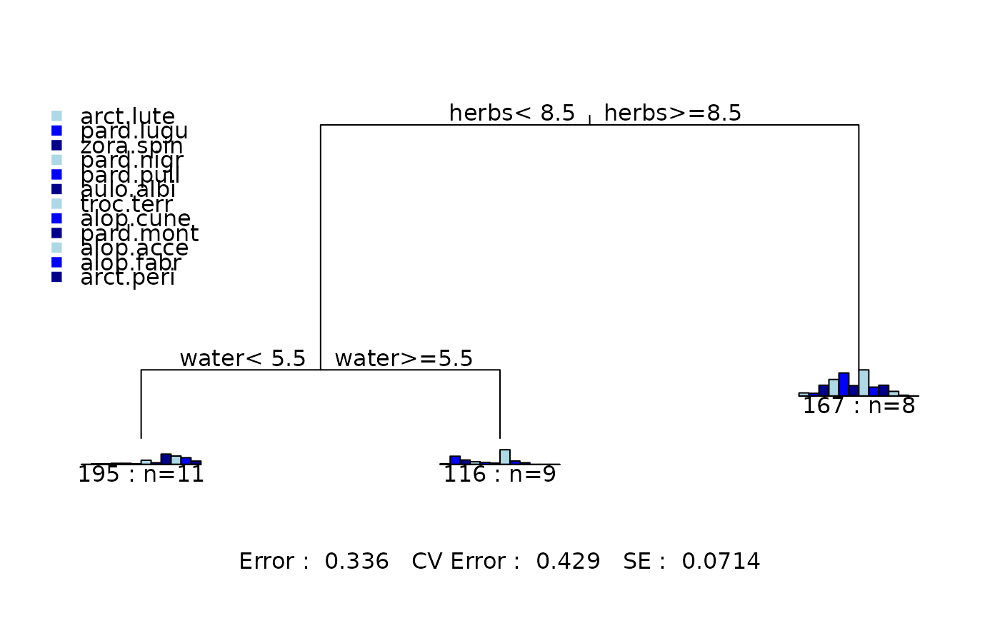

Spider Data
spider.RdData set on abundances of spiders and environmental predictors. All variables are rated on a 0-9 scale.
Usage
data(spider)Source
Van der Aart, P. J. and N. Smeeck-Enserink. 1975. Correlations between distributions of hunting spiders (Lycosidae, Ctenidae) and environmental characteristics in a dune area. Netherlands Journal of Zoology. 25:1-45.
These data were analysed using multivariate trees in De'ath, G. 2002. Multivariate Regression Trees: A New Technique for Modelling Species-Environment Relationships. Ecology. 83(4):1103-1117
Examples
data(spider)
fit<-mvpart(as.matrix(spider[,1:12])~water+twigs+reft+herbs+moss+sand,spider)

summary(fit)
#> Call:
#> mvpart(form = as.matrix(spider[, 1:12]) ~ water + twigs + reft +
#> herbs + moss + sand, data = spider)
#> n= 28
#>
#> CP nsplit rel error xerror xstd
#> 1 0.51864091 0 1.0000000 1.1024522 0.12785880
#> 2 0.14489010 1 0.4813591 0.5611124 0.07291997
#> 3 0.07537481 2 0.3364690 0.4291382 0.07140515
#>
#> Node number 1: 28 observations, complexity param=0.5186409
#> Means=0.3571,1.179,1.536,1.964,2.5,1.179,4.5,1.393,2.5,1.5,0.9286,0.4286, Summed MSE=50.64158
#> left son=2 (20 obs) right son=3 (8 obs)
#> Primary splits:
#> herbs < 8.5 to the left, improve=0.5186409, (0 missing)
#> water < 5.5 to the left, improve=0.3015809, (0 missing)
#> moss < 6 to the right, improve=0.2483042, (0 missing)
#> reft < 7.5 to the right, improve=0.2123679, (0 missing)
#> sand < 5.5 to the right, improve=0.2008664, (0 missing)
#>
#> Node number 2: 20 observations, complexity param=0.1448901
#> Means=0.1,1.3,0.75,0.6,0.5,0.3,2.9,0.8,2.1,1.5,1.2,0.6, Summed MSE=25.7775
#> left son=4 (11 obs) right son=5 (9 obs)
#> Primary splits:
#> water < 5.5 to the left, improve=0.3985045, (0 missing)
#> twigs < 3.5 to the left, improve=0.3985045, (0 missing)
#> reft < 3.5 to the right, improve=0.3985045, (0 missing)
#> moss < 6 to the right, improve=0.3518347, (0 missing)
#> herbs < 6.5 to the left, improve=0.2054174, (0 missing)
#>
#> Node number 3: 8 observations
#> Means=1,0.875,3.5,5.375,7.5,3.375,8.5,2.875,3.5,1.5,0.25,0, Summed MSE=20.875
#>
#> Node number 4: 11 observations
#> Means=0,0.1818,0.1818,0.3636,0.3636,0.1818,1.364,0.5455,3.364,2.727,2.182,1.091, Summed MSE=17.68595
#>
#> Node number 5: 9 observations
#> Means=0.2222,2.667,1.444,0.8889,0.6667,0.4444,4.778,1.111,0.5556,0,0,0, Summed MSE=12.83951
#>